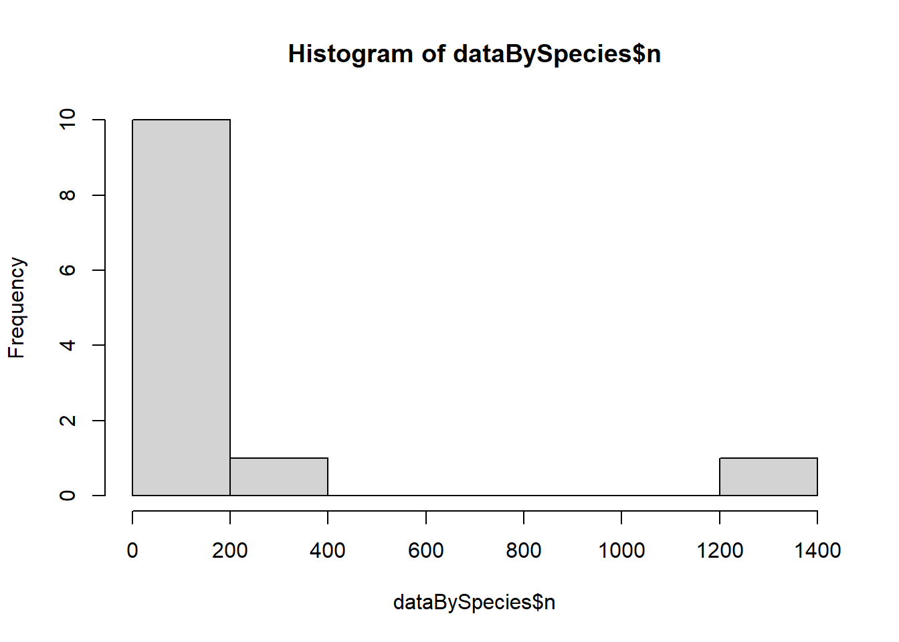

# Read data in to a data frame from CSV exported from iNat
getwd()## [1] "C:/Users/ljcos/OneDrive/Documents/UVM/Spring 2025/Computational Biology/Website/LauraWebsite"list.files()## [1] "_site.yml" "about.Rmd" "docs"
## [4] "Homework_3.Rmd" "Homework_4.Rmd" "Homework_5.Rmd"
## [7] "Homework_6.Rmd" "Homework_7.Rmd" "homework_links.Rmd"
## [10] "HW1.Rmd" "index.Rmd" "LauraWebsite.Rproj"library(tidyverse)## ── Attaching core tidyverse packages ──────────────────────── tidyverse 2.0.0 ──
## ✔ dplyr 1.1.4 ✔ readr 2.1.5
## ✔ forcats 1.0.0 ✔ stringr 1.5.1
## ✔ ggplot2 3.5.1 ✔ tibble 3.2.1
## ✔ lubridate 1.9.4 ✔ tidyr 1.3.1
## ✔ purrr 1.0.2
## ── Conflicts ────────────────────────────────────────── tidyverse_conflicts() ──
## ✖ dplyr::filter() masks stats::filter()
## ✖ dplyr::lag() masks stats::lag()
## ℹ Use the conflicted package (<http://conflicted.r-lib.org/>) to force all conflicts to become errorssetwd("C:/Users/ljcos/OneDrive/Documents/UVM/Spring 2025/Computational Biology/Lab5")
real_data <- read.csv(file="real_data2-reduced.csv",
header=TRUE,
sep=",",
fileEncoding="UTF-8"
) #nrows=400
glimpse(real_data)## Rows: 2,434
## Columns: 40
## $ id <int> 22572, 24295, 41439, 116155, 154515, …
## $ observed_on <chr> "6/21/2011", "7/5/2011", "6/22/2010",…
## $ time_observed_at <chr> "", "", "", "", "", "", "2010-07-15 1…
## $ time_zone <chr> "Eastern Time (US & Canada)", "Easter…
## $ user_id <int> 1175, 1175, 3847, 1620, 11340, 11340,…
## $ user_login <chr> "wabbytwax", "wabbytwax", "rpayne", "…
## $ user_name <chr> "John Beatty", "John Beatty", "Ron Pa…
## $ created_at <chr> "2011-06-23 03:31:37 UTC", "2011-07-0…
## $ updated_at <chr> "2024-08-27 18:50:03 UTC", "2025-02-0…
## $ quality_grade <chr> "research", "research", "research", "…
## $ license <chr> "CC-BY-NC", "CC-BY-NC", "CC-BY-NC", "…
## $ url <chr> "http://www.inaturalist.org/observati…
## $ image_url <chr> "https://static.inaturalist.org/photo…
## $ sound_url <lgl> NA, NA, NA, NA, NA, NA, NA, NA, NA, N…
## $ tag_list <chr> "", "butterfly great spangled fritill…
## $ num_identification_agreements <int> 2, 1, 1, 1, 1, 1, 1, 3, 2, 2, 1, 1, 1…
## $ num_identification_disagreements <int> 0, 0, 0, 0, 0, 0, 0, 0, 0, 0, 0, 0, 0…
## $ captive_cultivated <lgl> FALSE, FALSE, FALSE, FALSE, FALSE, FA…
## $ oauth_application_id <int> NA, NA, NA, NA, NA, NA, NA, NA, NA, N…
## $ place_guess <chr> "Nixon Park, York, Pa", "Shirleysburg…
## $ latitude <dbl> 39.88164, 40.29035, 44.03967, 41.3735…
## $ longitude <dbl> -76.73221, -77.89905, -73.17649, -71.…
## $ positional_accuracy <int> NA, NA, NA, 14, NA, 1554, NA, NA, NA,…
## $ private_place_guess <chr> "", "", "", "", "", "", "", "", "", "…
## $ private_latitude <dbl> NA, NA, NA, NA, NA, NA, NA, NA, NA, N…
## $ private_longitude <dbl> NA, NA, NA, NA, NA, NA, NA, NA, NA, N…
## $ public_positional_accuracy <int> NA, NA, NA, 14, NA, 1554, NA, NA, NA,…
## $ geoprivacy <chr> "", "", "", "", "", "", "", "", "", "…
## $ taxon_geoprivacy <chr> "", "", "", "", "", "", "", "", "", "…
## $ coordinates_obscured <lgl> FALSE, FALSE, FALSE, FALSE, FALSE, FA…
## $ positioning_method <chr> "", "", "", "", "", "", "", "", "", "…
## $ positioning_device <chr> "", "", "", "manual", "", "", "", "",…
## $ species_guess <chr> "Great Spangled Fritillary", "Great S…
## $ scientific_name <chr> "Argynnis cybele", "Argynnis cybele",…
## $ common_name <chr> "Great Spangled Fritillary", "Great S…
## $ iconic_taxon_name <chr> "Insecta", "Insecta", "Insecta", "Ins…
## $ taxon_id <int> 1456562, 1456562, 1456562, 1456562, 1…
## $ taxon_family_name <chr> "Nymphalidae", "Nymphalidae", "Nympha…
## $ taxon_species_name <chr> "Argynnis cybele", "Argynnis cybele",…
## $ plant_species_name <chr> "Asclepias syriaca", "Asclepias syria…#grab just the columns I need
less_data <- data.frame(real_data["id"],real_data["observed_on"],
real_data["scientific_name"],
real_data["plant_species_name"])
head(less_data)## id observed_on scientific_name plant_species_name
## 1 22572 6/21/2011 Argynnis cybele Asclepias syriaca
## 2 24295 7/5/2011 Argynnis cybele Asclepias syriaca
## 3 41439 6/22/2010 Argynnis cybele Trifolium pratense
## 4 116155 8/24/2012 Argynnis cybele Buddleja davidii
## 5 154515 6/20/2012 Argynnis atlantis Trifolium pratense
## 6 154613 7/6/2012 Argynnis atlantis Asclepias syriacaglimpse(less_data)## Rows: 2,434
## Columns: 4
## $ id <int> 22572, 24295, 41439, 116155, 154515, 154613, 176108…
## $ observed_on <chr> "6/21/2011", "7/5/2011", "6/22/2010", "8/24/2012", …
## $ scientific_name <chr> "Argynnis cybele", "Argynnis cybele", "Argynnis cyb…
## $ plant_species_name <chr> "Asclepias syriaca", "Asclepias syriaca", "Trifoliu…# clean date column to keep just the year
less_data$observed_on[] <- gsub("\\d+/\\d+/",
"",
less_data$observed_on[])
head(less_data)## id observed_on scientific_name plant_species_name
## 1 22572 2011 Argynnis cybele Asclepias syriaca
## 2 24295 2011 Argynnis cybele Asclepias syriaca
## 3 41439 2010 Argynnis cybele Trifolium pratense
## 4 116155 2012 Argynnis cybele Buddleja davidii
## 5 154515 2012 Argynnis atlantis Trifolium pratense
## 6 154613 2012 Argynnis atlantis Asclepias syriacalength(less_data[[1]])## [1] 2434# clean data to keep only rows with plant at the species level
good_data_mask <- grep(" ",less_data$plant_species_name) #if there's a space, assume it's a good genus species name. vector of good indices
less_data <- less_data[good_data_mask, ] #keep only the good rows
length(less_data[[1]])## [1] 1989# clean data to keep only rows with butterfly at the species level
good_data_mask <- grep(" ",less_data$scientific_name) #if there's a space, assume it's a good genus species name. vector of good indices
less_data <- less_data[good_data_mask, ] #keep only the good rows
length(less_data[[1]])## [1] 1985Ok, now we have data
# Group by year and scientific name, and count the number of unique associated plants for each butterfly that year
dataByYear <- less_data %>%
group_by(observed_on,scientific_name) %>%
summarize(plant_taxon_count=length(unique(plant_species_name)),n=n())## `summarise()` has grouped output by 'observed_on'. You can override using the
## `.groups` argument.head(dataByYear)## # A tibble: 6 × 4
## # Groups: observed_on [5]
## observed_on scientific_name plant_taxon_count n
## <chr> <chr> <int> <int>
## 1 1974 Argynnis aphrodite 1 1
## 2 1974 Argynnis cybele 1 3
## 3 1976 Argynnis atlantis 1 1
## 4 1982 Argynnis atlantis 1 1
## 5 1984 Argynnis cybele 1 1
## 6 1990 Argynnis cybele 1 4summary(dataByYear)## observed_on scientific_name plant_taxon_count n
## Length:145 Length:145 Min. : 1.000 Min. : 1.00
## Class :character Class :character 1st Qu.: 1.000 1st Qu.: 1.00
## Mode :character Mode :character Median : 3.000 Median : 4.00
## Mean : 5.959 Mean : 13.69
## 3rd Qu.: 7.000 3rd Qu.: 10.00
## Max. :47.000 Max. :258.00# Group by year and scientific name, and count the number of unique associated plants for each butterfly that year
dataBySpecies <- less_data %>%
group_by(scientific_name) %>%
summarize(plant_taxon_count=length(unique(plant_species_name)),n=n())#### Does the number of plants a butterfly is associated with follow a normal distribution? let's try a histogramhist(dataBySpecies$n)
library(MASS) require(“fitdistrplus”) x <- df$plant_taxon_count print(x) plotdist(x,histo=TRUE,demp=TRUE) fit <- fitdistr(x,“negative binomial”) print(fit) dnbinom(x,size=1.1200373,mu=5.9586053)
curve( dnbinom(x,size=1,mu=6), # add=TRUE, lwd=2, col=“red”, from=0, to=50 ) ```